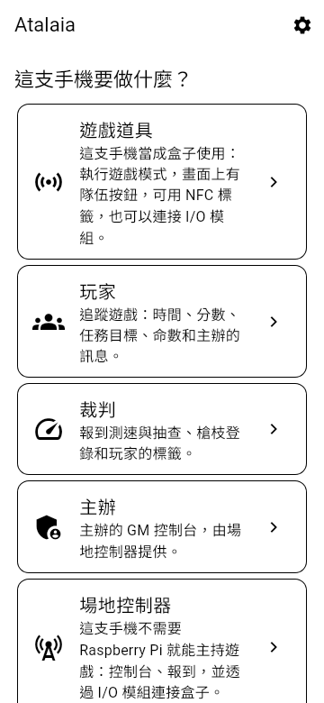
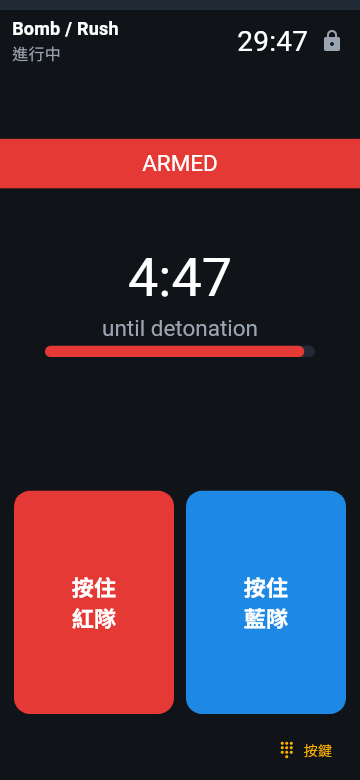
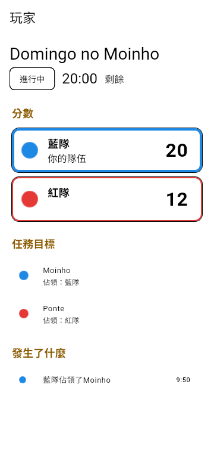
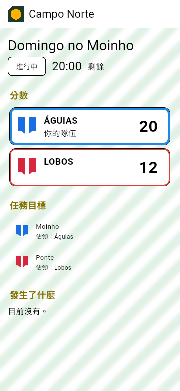
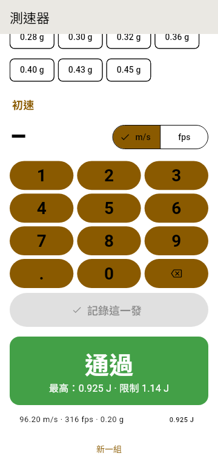

佔點
隊伍按住道具的輸入幾秒鐘就能佔領它，只要守住就會持續得分。另一隊隨時可以搶過去。
本頁由 AI 模型翻譯，尚未經過審閱。你用中文玩生存遊戲嗎？歡迎協助審閱：請見 GitHub 儲存庫的 docs/translations。
早期開發（Pre-alpha）· 第 1、2 階段軟體完成，真實開發板已在工作台上和場地控制器玩完整場遊戲（含鍵盤）；第 3 階段軟體完成，iOS App 已在 iPhone 上檢查過；第 4 階段的網站伺服器已在測試伺服器上運行；第 5 階段軟體已完成 · 尚未能上場使用
Atalaia 是一個開放平台，給生存遊戲、漆彈與 milsim 的電子道具使用：隊伍要佔領的盒子、要啟動和拆除的炸彈。用一塊 20 歐元的微控制器（一塊小巧便宜的電腦板）做一個佔點盒，把舊 Android 手機變成駭客終端，用 LoRa 網狀網路（遠距離、低耗電的無線電，盒子之間在場地上互相轉傳）跑一場 20 個盒子的週末 milsim，還能把自己的遊戲模式寫成小腳本。每一場遊戲都在場地本身運作：不需要雲端或網路，也沒有廠商能把你綁住。
Atalaia（唸作 ah-tah-LYE-ah）是葡萄牙文的瞭望塔：山丘上的哨塔，負責注意狀況並把警訊傳下去。 為什麼取這個名字？

電子道具讓遊戲更好玩，但商業系統把規則鎖在封閉的韌體裡。新模式要等廠商推出，沒有公開的 API，也不能加上自己的硬體。Atalaia 的做法不一樣。
每一場遊戲都在場地本身運作，完全離線，從一棟房子到好幾公里的森林都行。網路是可有可無的。
便宜的 ESP32 開發板、信用卡大小的 Raspberry Pi 電腦、簡單的 Arduino 等級開發板，以及全新或回收再利用的 Android 手機，都能用在同一場遊戲裡。ESP32 盒子、場地控制器與 Android 手機的軟體已經寫好；Arduino 等級的開發板之後才會支援。
遊戲模式是簡短的 Lua 腳本，也就是寫著規則的小文字檔，再加上一個設定檔：容易閱讀、修改和分享，而且沒有任何模式需要在盒子的內建軟體裡寫專屬程式碼。目前盒子的模式是內建的；不必重新燒錄（重新安裝）軟體就能送入新模式，還在開發中。
道具之間透過 Skirmesh-RF 溝通，這是一個有完整文件的無線電協定，所以任何人都能做出可以加入的裝置。場地控制器提供 MQTT、REST 和 WebSocket API，給記分板、直播疊加畫面和其他工具使用。
玩家角色、小隊、用印出來的海報在場地報到，以及一個測速登記冊，保存每把槍經簽署的測速值供抽查使用，這些都已在軟體中完成；自訂劇本在第 4 階段推出。
收費的場地和販售盒子的創客都很歡迎。任何發布或架設修改版本的人，都要把修改分享回來。
簡單來說：場地上的道具用無線電和場地控制器溝通，場地控制器是基地裡的一台小電腦，負責執行遊戲和記分。手機透過 Wi-Fi 連上它，記分板、直播疊加畫面和 ATAK 之類的地圖 App 則透過它的 API 連線。網路上還可以有一台選用的場地伺服器，保存帳號與歷史紀錄。控制器、它的 API 和主辦的控制台都已在電腦上完成並測試，還沒在場地上用過；場地伺服器目前只有骨架和帳號功能（使用兩步驟驗證碼登入與各場地的角色權限；還沒有遊戲資料）。
在底層，每一個執行遊戲模式的裝置都使用同一個以 C11 寫成的共用核心，以及同樣的 Lua 模式；只有每種硬體的一層薄薄的程式不同。一個模式寫一次，在盒子、手機或 Raspberry Pi 上玩起來都一樣。

道具之間透過 LoRa（一種遠距離、低耗電的無線電）溝通，使用 Atalaia 自己的協定 Skirmesh-RF。兩張圖說明 LoRa 在場地上能做什麼、不能做什麼，以及同一個協定如何在差異很大的裝置上運作。這些都還沒在真實場地上用過。
模式回應的是意圖（「有一隊正在搶這個道具」），而不是硬體，所以同一個腳本可以在 Field Box、有按鍵的盒子或 Android 手機上執行。目前已有十四種模式、一個附加規則和醫護包在軟體中寫好並測試過；都還沒在真實場地上跑過。
隊伍按住道具的輸入幾秒鐘就能佔領它，只要守住就會持續得分。另一隊隨時可以搶過去。
攻方啟動炸彈後要守住它；守方必須在引信燒完前拆除。爆炸會結束遊戲，攻方獲勝。用按住按鈕來啟動和拆除，或給每隊一組自己的按鍵密碼。
玩家身上帶著經簽署的 NFC 標籤。隊伍在站點掃描收集到的標籤：敵人的標籤確認擊殺，隊友的標籤則否決擊殺。偽造的標籤會被拒絕。
八張擷取自真正 Field Box 韌體（ESP32、LVGL 9.2、320 × 240 TFT）的畫面，在 Wokwi 模擬器中執行。這裡的盒子介面是英文的。韌體現在已經能在真實的 Heltec V4.3 上執行；這些截圖來自模擬器。點一下截圖可以看大圖。


組裝手冊（英文）有 Heltec WiFi LoRa 32 V4 的完整接線圖和第一次燒錄的教學。
App 自己的畫面有葡萄牙文、英文、德文和繁體中文，並且和 Field Box 使用同樣的 YAML 檔來繪製每個模式的畫面。這些是 App 的測試圖片，不是手機的照片：App 已在 Android 模擬器上執行過，還沒在真正的手機上跑過。





醫護包在 Field Box 和 Android 道具上都用同樣的 YAML 檔繪製畫面，預設是葡萄牙文，除非 GM 設成英文、德文或中文。這是 App 畫出來的樣子：


不需要任何硬體：共用核心可以在電腦上執行。模擬器在你的瀏覽器裡跑一個模式：按住隊伍按鈕、看每個道具的畫面、追蹤事件紀錄。下面的指令要在終端機中輸入。
cmake -S core -B build -DATALAIA_SHARED=ON
cmake --build build
cd simulator
python -m atalaia_sim serve ../modes/bombcd simulator
python ../tools/docker_sim.py serve ../modes/bomb接著打開 http://localhost:8000。你需要 Python 3.10 以上和 PyYAML。模擬器指南（英文）列出了所有選項。
Field Box、USB 無線電數據機和 I/O 模組的韌體都已寫好，三者都在電腦上的測試中執行。Field Box 和數據機的韌體已經在工作台上的真實 Heltec V4.3 上執行：盒子透過第二塊當作數據機的開發板，以無線電加入場地控制器的遊戲，一路玩到結束，也能以無線方式更新韌體，開發板自己的小螢幕會顯示遊戲；I/O 模組的韌體還沒在開發板上跑過。想在沒有盒子的情況下試試裸板，有一個工作台版本的韌體（透過 USB 線傳送按鍵）。要組裝盒子並燒錄，請照著組裝手冊；韌體指南也說明了如何建置數據機和 I/O 模組（兩者皆為英文）。
用 Docker 建置 App 的除錯版 APK，安裝到 Android 8.0 以上的手機或 Android 模擬器上，詳見 App 指南（英文）。它已在模擬器上執行過，還沒在真正的手機上跑過。
給使用 Atalaia 的人看的手冊，不是給開發者看的：給玩家、主辦、裁判、盒子操作員和組裝盒子的人，有英文和葡萄牙文版本，另附一頁式快速入門。內容照軟體現在實際顯示的寫，還沒在場地上試過的部分會特別標明。目前還沒有中文版。
六個階段，每個階段都以一次真實場地測試收尾，也就是它的「關卡」。軟體進度跑在硬體前面：第 1 到 3 階段的軟體已完成（真實開發板已在工作台上玩完整場遊戲，iOS App 已在 iPhone 上通過檢查清單）；第 4、5 階段的軟體已完成。關卡在等組裝好的盒子、場地測試、一台真正的伺服器和專案的登錄庫金鑰。
共用核心、Lua 沙箱、Skirmesh-RF 編解碼器和瀏覽器模擬器。關卡已通過。
Field Box 韌體與組裝手冊；真實開發板已能在工作台上玩完整場遊戲。正在等第一個組裝好的盒子。
LoRa 上的 Skirmesh-RF、場地控制器、API、GM 控制台和一組模式，已在軟體中測試；在工作台上，真實開發板透過無線電和控制器玩完整場遊戲，工作台上發現的問題已在軟體中修正。正在等場地上 5 個組裝好的盒子。
Android 道具、I/O 模組、玩家 App 和需要手機的模式：軟體已完成，包括 iOS（已在 iPhone 上檢查）。場地測試在等真正的手機和 I/O 模組。
場地伺服器、遊戲排程與報名、自訂劇本、進階模式、ATAK。軟體的每個步驟都已完成；用 Google 和 Microsoft 登入已在測試伺服器上用真正的登入服務試過。還需要一台真正的伺服器、託管模式的上線條件和硬體上的測試。
視覺化模式編輯器、經簽署的模式套件、作為範本的模式登錄庫、德文和繁體中文、組裝指南。軟體的每個步驟都已完成。
場地、隊伍和創客會在這裡聚集。一切都採自願加入：社群中心只保存大家自己選擇公開的內容，遊戲資料則留在每個場地自己的伺服器上。
問題、點子、設計審閱和活動心得。 前往 Discussions
每個作品的照片、材料清單、外殼檔案和接線筆記，從第一批 Field Box 原型開始。
自願加入的名單，列出使用 Atalaia 的場地和隊伍，附地區、場地類型和聯絡連結。
模式登錄庫已經上線，目前還沒有模式：來分享第一個吧。附說明和社群評分的瀏覽頁之後才會有。
自願加入的匿名統計，記錄版本、平台和玩過的模式總數。預設關閉。
給沒有 IT 支援的社團，只收成本價，每個社團的資料彼此分開，而且可以匯出。
Atalaia 由玩家、場主和創客一起打造。你今天就能幫忙：
每一個 commit 都要有 Signed-off-by 這一行，而且專案嚴格採用無塵室方式從頭撰寫：不使用任何商業產品的程式碼、韌體、手冊、音效或圖片。
atalaia 就是瞭望塔：在山丘或海岸邊的哨站。這個字從阿拉伯文的 aṭ-ṭalāʾiʿ（「斥候」）傳入葡萄牙文，estar de atalaia 至今仍是「保持警戒」的意思。
場地控制器看得到場地上的每一個道具，一有變化就立刻告訴 GM。瞭望塔也是在地優先的，而且運作著最早的低頻寬網狀網路：白天放煙、夜晚點火，從一座塔傳到另一座塔。Skirmesh-RF 用 LoRa 依循同樣的規則。
Atalaia 的道具是遊戲器材。要讓它們看起來就是遊戲道具：顏色鮮豔、清楚的「GAME PROP」標籤，而且沒有任何像真正爆裂物的東西。用貼上標籤的箱子運送，絕不要在場地外無人看管，並小心對待鋰電池。